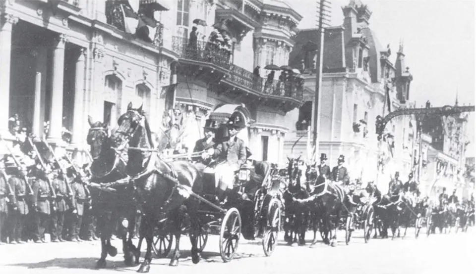

Centenario de la Independencia

Las celebraciones del primer centenario de la Primera Junta Nacional de Gobierno se prepararon durante años y tuvieron su centro en Santiago. Las presidió el vicepresidente Emiliano Figueroa Larraín, ya que el presidente Pedro Montt había muerto en agosto en Alemania y su reemplazante, Elías Fernández Albano, falleció a comienzos de septiembre. Asistieron delegaciones extranjeras, entre ellas la del presidente argentino José Figueroa Alcorta.
La elite quiso mostrar un país moderno y próspero, gracias a la riqueza de La época del salitre. Se inauguraron o impulsaron obras como el Palacio de Bellas Artes, la Estación Mapocho y el Parque Forestal, y las colectividades extranjeras donaron monumentos a la ciudad.
Al mismo tiempo surgió una fuerte crítica a la situación del país, que los historiadores llaman la "crisis del Centenario". Autores como Alejandro Venegas, con el seudónimo Dr. J. Valdés Cange, y Luis Emilio Recabarren, en su conferencia Ricos y pobres a través de un siglo de vida republicana, denunciaron la desigualdad, la corrupción política y La cuestión social. Para ellos, la mayoría de la población tenía poco que celebrar.
Versión para niños
El 18 de septiembre de 1910, Chile cumplió cien años desde la Primera Junta Nacional de Gobierno. Hubo grandes fiestas en Santiago, con desfiles, banderas y visitantes de otros países. Se construyeron edificios hermosos, como el Museo Nacional de Bellas Artes, y se arreglaron parques. Pero no todos celebraban igual: mientras algunas familias vivían con lujos, muchas otras eran muy pobres. Algunas personas escribieron que Chile debía preocuparse más por quienes tenían menos.
Para maestros
Nivel sugerido: 1° medio
Objetivo: Contrastar la visión oficial del Centenario con las críticas sociales de la época, para comprender el país de comienzos del siglo XX.
Preguntas para la clase:
- ¿Qué imagen de Chile quería mostrar la elite en 1910?
- ¿Por qué algunos autores hablaron de crisis en medio de la celebración?
- ¿Qué semejanzas y diferencias hay con la celebración del Bicentenario en 2010?
Actividad (20–30 min): Los estudiantes comparan fotografías oficiales de los festejos del Centenario con imágenes de conventillos de la misma época. Luego leen un fragmento breve de la conferencia de Recabarren y redactan un titular de diario para cada visión del país.
Fuentes sugeridas: Memoria Chilena; Biblioteca Nacional Digital; Museo Nacional de Bellas Artes; Museo Histórico Nacional.
Objetivos de Aprendizaje (Currículum Nacional)
- 1° básico · HI01 OA 05 Reconocer los símbolos representativos de Chile … conmemoraciones nacionales (como Fiestas Patrias, Día del Descubrimiento de dos mundos y Combate Naval de Iquique)
- 6° básico · HI06 OA 06 Caracterizar los principales aspectos que definieron el período de riqueza aportada por la explotación del salitre … el inicio de la "cuestión social"
- 1° medio · HI1M OA 17 Caracterizar las principales transformaciones generadas por las riquezas del salitre … de las inversiones públicas en infraestructura y en educación
- 1° medio · HI1M OA 18 Analizar las principales transformaciones de la sociedad en el cambio de siglo, considerando los factores que originaron la cuestión social
Revisión humana pendiente. Cómo se revisa · Reportar un error
Cómo citar: Historia de Chile. (2026). Centenario de la Independencia. En Historia de Chile: atlas y línea de tiempo. https://moises-salgado.github.io/historia-de-chile/momento/centenario-de-la-independencia.html